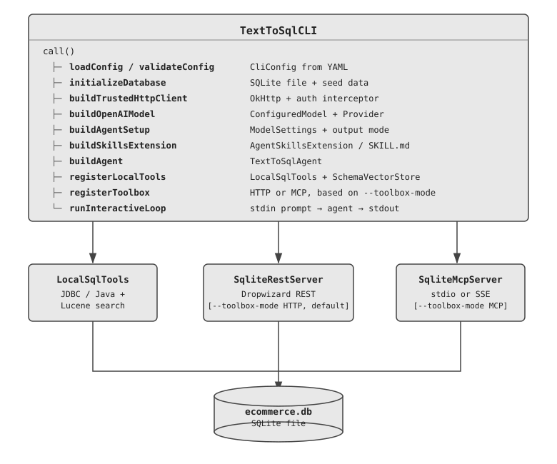

Example¶
Text-to-SQL Agent¶
The sentinel-ai-examples module ships a fully working Text-to-SQL CLI agent that lets
you query an e-commerce SQLite database in plain English. All source files live under
sentinel-ai-examples/src/main/java/com/phonepe/sentinelai/examples/texttosql/.
NOTE:
This agent is not production ready and is only used for demonstration purpose for understanding the capabilities provided by sentinel-ai. As such, you may only use it as a reference to develop real-world agentic applications with sentinel-ai.
For example, when the user provides a prompt like below in the CLI, then they may see the results shown below
> List top 3 sellers by order volume
┌──────────────────────┬──────────────┐
│ seller_name │ total_orders │
├──────────────────────┼──────────────┤
│ TechGadgets India │ 312 │
│ FashionHub │ 287 │
│ HomeEssentials │ 241 │
└──────────────────────┴──────────────┘
Running the Example¶
Prerequisites¶
- Java 17+
- Maven 3.8+
- An OpenAI-compatible API key
Build¶
Configure¶
mkdir -p .env
cp src/main/resources/.env/agent-config.yml.example .env/agent-config.yml
# Edit .env/agent-config.yml and set openai.apiKey
Run¶
Available CLI options:
| Option | Default | Description |
|---|---|---|
--config, -c |
.env/agent-config.yml |
Path to the YAML config file |
--skills-dir, -s |
(bundled) | Override the skills directory |
--session-id |
(random UUID) | Session ID for conversation history |
--toolbox-mode, -t |
HTTP |
Toolbox for SQL execution: HTTP (embedded REST server) or MCP (MCP subprocess) |
--mcp-server-mode |
STDIO |
MCP transport when --toolbox-mode MCP: STDIO or SSE |
--mcp-port |
8766 |
HTTP port for the MCP SSE subprocess (only used with --mcp-server-mode SSE) |
Sample Queries¶
Once the banner appears, try any of the following:
> List top 3 sellers by order volume
> Find the user with the most number of orders
> Find out top cities by shoe sales
> What are the top 5 best-selling products this month?
> Show total revenue per product category
> Which products are running low on inventory?
> How many orders were placed in the last 30 days?
Type exit or quit (or press Ctrl+D) to stop.
Architecture Overview¶

The agent has three tool layers on top of the same SQLite database:
| Layer | Class / File | Description |
|---|---|---|
| Local | LocalTools.java |
In-process tools — hybrid schema search (Lucene), timestamp conversion, schema descriptions, ASCII table rendering |
| Remote-HTTP | sqlite-api.yml + SqliteRestServer.java |
HTTP calls to an embedded Dropwizard server exposing a REST CRUD API (default toolbox mode) |
| MCP | SqliteMcpServer.java + SqliteQueryEngine.java |
MCP server launched as a subprocess, accessed via stdio or SSE transport (enabled with --toolbox-mode MCP) |
The CLI also registers AskUserTool, which lets the model pause and ask the human operator
for clarification when a prompt is ambiguous. This tool is orthogonal to the three
database-access layers above.
Code Walkthrough¶
1. The Agent — TextToSqlAgent¶
File: agent/TextToSqlAgent.java
Every Sentinel AI agent extends Agent<R, T, A>:
R— request type (plainStringquestion from the user)T— response type (SqlQueryResultrecord)A— self-type for the fluent builder (TextToSqlAgent)
public class TextToSqlAgent extends Agent<String, SqlQueryResult, TextToSqlAgent> {
private static final String SYSTEM_PROMPT =
"""
You are an expert SQL assistant for an e-commerce SQLite database.
Translate natural-language questions into SQL queries, execute them, and return structured results.
Follow the sql-execution skill protocol for every request.
If unable to proceed without user input, ask the user for clarification before continuing.
The user's timezone is '%s'. Use this timezone for all date formatting and timestamp conversions.
""".formatted(TimeZone.getDefault().toZoneId().toString());
@Builder
public TextToSqlAgent(@NonNull AgentSetup setup,
@Singular List<AgentExtension<String, SqlQueryResult, TextToSqlAgent>> extensions,
@NonNull OutputValidator<String, SqlQueryResult> outputValidator) {
super(SqlQueryResult.class, SYSTEM_PROMPT, setup, extensions,
Map.of(), new ApproveAllToolRuns<>(), outputValidator,
new DefaultErrorHandler<>(), new NeverTerminateEarlyStrategy());
}
@Override
public String name() { return "text-to-sql-agent"; }
}
The system prompt is intentionally minimal — it delegates the full step-by-step execution
protocol (schema discovery, SQL generation, timestamp conversion, formatting) to the
sql-execution skill loaded via AgentSkillsExtension. This keeps the agent class
decoupled from protocol details and makes the workflow easy to update without touching Java code.
The CLI wiring for this example also registers OpenTelemetryAgentExtension using
GlobalOpenTelemetry.getTracer(...), so agent runs emit tracing spans automatically whenever
the hosting process configures an OpenTelemetry SDK/exporter.
2. The Output Type — SqlQueryResult¶
File: tools/model/SqlQueryResult.java
The agent's structured output is a plain Java record annotated for JSON Schema generation:
@JsonClassDescription("Result of executing a SQL query against a SQLite database.")
public record SqlQueryResult(
@JsonPropertyDescription("The SQL statement generated from the natural-language request")
String generatedSql,
@JsonPropertyDescription("Rows returned. Each entry is a JSON string: "
+ "{\"col1\": val1, \"col2\": val2, ...}")
List<String> results,
@JsonPropertyDescription("Human-readable summary, caveats, or error description.")
String explanation,
@JsonPropertyDescription("Wall-clock time in milliseconds from submission to receipt.")
long executionTimeMs
) {}
Sentinel AI uses the @JsonClassDescription / @JsonPropertyDescription annotations to
derive the JSON Schema that is sent to the model as the output tool definition —
no manual schema authoring required.
3. Local Tools — LocalTools¶
File: tools/LocalTools.java
LocalTools implements ToolBox and exposes seven tools via @Tool-annotated methods.
Each method's name attribute becomes the tool name the model sees:
@Tool name |
Method | What it does |
|---|---|---|
search_schema |
searchSchema(query, topK) |
Hybrid BM25 + semantic search over table/column descriptions — first call in every query |
get_table_desc |
getTableDescription(tableDescRequest) |
Full description (columns, types, nullability, semantics) for a list of tables |
get_column_desc |
getColumnDescription(tableName, columnName) |
Description of a specific column |
get_table_row_counts |
getTableRowCounts() |
Row count per table |
get_current_dt |
getCurrentDateTime(timezone) |
Current epoch + human datetime in timezone |
convert_epoch_to_local_dt |
convertEpochToLocalDateTime(epoch, tz) |
Epoch seconds → yyyy/MM/dd HH:mm:ss |
format_results_as_table |
formatResultsAsTable(result) |
Renders SqlQueryResult as an ASCII table |
The constructor now accepts a dataDir argument used to persist the Lucene vector store index:
@Tool(name = "search_schema",
value = "Search the database schema using hybrid keyword and semantic search. "
+ "Returns the most relevant tables and columns for your question. "
+ "Use this to find which tables/columns to query before writing SQL.")
public String searchSchema(String query, int topK) {
List<SchemaSearchResult> results = vectorStore.hybridSearch(query, topK);
// formats results as a ranked list: index, type (TABLE/COLUMN), name, score, description
...
}
@Tool(name = "convert_epoch_to_local_dt",
value = "Convert a Unix epoch timestamp (seconds) to a formatted date-time string "
+ "in the given IANA timezone.")
public String convertEpochToLocalDateTime(long epochSeconds, String timezone) {
final var zdt = Instant.ofEpochSecond(epochSeconds).atZone(ZoneId.of(timezone));
return zdt.format(DISPLAY_FORMAT); // yyyy/MM/dd HH:mm:ss
}
These tools are registered with the agent at runtime:
// in TextToSqlCLI.registerLocalTools()
final var dataDir = dbPath.getParent();
agent.registerTools(ToolUtils.readTools(new LocalTools(dbPath.toString(), dataDir)));
4. Hybrid Schema Search — SchemaVectorStore¶
Files: tools/vectorstore/SchemaVectorStore.java, tools/vectorstore/HashTextEmbedder.java, tools/vectorstore/VectorStoreInitializer.java
Instead of a monolithic get_db_schema call that dumps the entire schema on every query,
the agent uses a hybrid search approach to retrieve only the tables and columns relevant
to the current question. This keeps context windows small and improves accuracy.
How it works¶
The vector store is backed by Apache Lucene and combines two complementary retrieval signals:
| Signal | Algorithm | Field |
|---|---|---|
| Keyword | BM25 full-text search | content (natural-language description of each table/column) |
| Semantic | KNN cosine-similarity | vector (128-dim feature-hash embedding) |
The embedding model (HashTextEmbedder) is a lightweight, deterministic feature hasher —
no external embedding API is needed. It captures word-level and character 3-gram patterns and
produces L2-normalised vectors suitable for cosine similarity.
Hybrid scoring algorithm:
1. Embed the query text → float[128] vector
2. Run BM25 search against the `content` field → bm25Candidates
3. Run KNN search against the `vector` field → knnCandidates
4. Union both candidate sets
5. Normalise each score set independently to [0, 1]
6. combinedScore = 0.5 × normBM25 + 0.5 × normKNN
7. Return top-K results sorted by combinedScore DESC
The Lucene index is written to {dataDir}/lucene-schema-index/ the first time the CLI
starts and re-opened read-only on subsequent runs. Indexed documents come from
resources/db/schema_descriptions.json which contains human-authored descriptions for every
table and column.
search_schema output format¶
## Schema search results for: "order delivery timestamp"
1. [TABLE] orders (score: 0.921)
Core transaction table recording every customer purchase...
2. [COLUMN] orders.delivered_at (score: 0.887)
Unix epoch seconds when the order was delivered to the customer...
3. [COLUMN] orders.ordered_at (score: 0.754)
Unix epoch seconds when the order was placed...
The sql-execution skill instructs the model to call search_schema first, extract the
unique table names from the results, then call get_table_desc with those names to retrieve
full column metadata before writing any SQL.
5. Remote-HTTP Toolbox — sqlite-api.yml (default)¶
File: resources/http-tools/sqlite-api.yml
The HTTP toolbox is declared in YAML and backed by the embedded Dropwizard server.
Each entry under sqlite-api.tools maps to an HTTP endpoint. At runtime, the toolbox
name is set to "sqlite-api", so the model sees tool names such as
sqlite-api_execute_query, sqlite-api_list_tables, and sqlite-api_get_table_schema.
The query tool posts to /api/sqlite/query, whose backing resource returns a
SqlQueryResult-shaped JSON payload for read-only SQL. Write operations are handled by
separate CRUD-style HTTP tools such as insert_record and update_records rather than by
the generic query endpoint.
Example YAML entry:
sqlite-api:
tools:
- metadata:
name: execute_query # → model sees "sqlite-api_execute_query"
description: >
Execute a raw SQL query against the SQLite e-commerce database.
The backing REST endpoint permits read-only SQL only.
parameters:
sql:
description: The complete SQL statement to execute
type: STRING
definition:
method: POST
path:
type: TEXT
content: /api/sqlite/query
body:
type: TEXT_SUBSTITUTOR # Apache Commons ${variable} interpolation
content: |
{"sql": "${sql}"}
contentType: application/json
- metadata:
name: get_table_schema # → model sees "sqlite-api_get_table_schema"
parameters:
tableName: {type: STRING}
definition:
method: GET
path:
type: TEXT_SUBSTITUTOR
content: /api/sqlite/schema/${tableName}
The HttpToolBox is created with the toolbox name "sqlite-api", so every tool
name is prefixed — execute_query becomes sqlite-api_execute_query in the model's
tool list. The base URL is injected at runtime once the embedded server has started:
// in TextToSqlCLI.registerHttpToolbox()
final var httpToolBox = new HttpToolBox(
"sqlite-api",
new OkHttpClient.Builder().build(),
toolSource,
mapper,
baseUrl); // e.g. "http://localhost:54321"
agent.registerToolbox(httpToolBox);
6. The Embedded REST Server — SqliteRestServer¶
Files: server/SqliteRestServer.java, server/SqliteRestResource.java
The CLI starts a Dropwizard application in a background daemon thread on a
dynamically chosen free port. This exposes the same SQLite database over HTTP so
that the HttpToolBox tools can call it:
POST /api/sqlite/query — execute read-only SQL (SELECT / WITH / PRAGMA)
GET /api/sqlite/tables — list all tables
GET /api/sqlite/schema/{table} — column definitions
GET /api/sqlite/info — database metadata
GET /api/sqlite/records/{tbl} — read rows (optional filters)
POST /api/sqlite/records/{tbl} — insert a record
PUT /api/sqlite/records/{tbl} — update matching rows
DELETE /api/sqlite/records/{tbl} — delete matching rows
// in TextToSqlCLI.startRestServer()
final var port = SqliteRestServer.findFreePort();
final var url = SqliteRestServer.startEmbedded(dbPath.toString(), port, mapper);
// url → "http://localhost:<port>"
startEmbedded launches the Dropwizard run() loop in a CompletableFuture and
then polls the TCP port until it responds (up to 30 seconds), so by the time the
method returns the server is ready to accept requests.
7. MCP Server — SqliteMcpServer¶
File: mcp/SqliteMcpServer.java
SqliteMcpServer is an alternative to the embedded Dropwizard server. It implements the
Model Context Protocol (MCP) and exposes the same SQLite operations as MCP tools.
The CLI launches it as a subprocess when --toolbox-mode MCP is specified.
The MCP tool-handler logic itself now lives in
mcp/SqliteQueryEngine.java,
which keeps the server class focused on transport wiring.
MCP tools exposed¶
| MCP tool | Description |
|---|---|
execute_query |
Execute a read-only SELECT statement with optional parameterised values |
list_tables |
List all user-defined tables in the database |
get_table_schema |
Column definitions (name, type, nullable, default) for a specific table |
get_database_info |
Database metadata (path, table count, approximate size) |
Write DML operations (INSERT, UPDATE, DELETE, DROP, ALTER, CREATE) are explicitly blocked.
Transport modes¶
--mcp-server-mode |
Transport | How it works |
|---|---|---|
STDIO (default) |
stdin/stdout | CLI spawns the subprocess and exchanges MCP messages via pipes. Logging is redirected to stderr so it does not interfere with the protocol. |
SSE |
HTTP Server-Sent Events | Subprocess binds an embedded Jetty server on --mcp-port (default 8766). The CLI polls the port until it responds, then registers an MCPSSEServerConfig pointing at http://localhost:<port>. |
// Stdio MCP toolbox registration (in TextToSqlCLI)
final var mcpConfig = MCPStdioServerConfig.builder()
.command(javaCmd)
.args(List.of("-cp", classpath,
"...SqliteMcpServer",
"--db-path", dbPath.toString()))
.build();
final var mcpToolBox = MCPToolBox.buildFromConfig()
.name("sqlite-mcp")
.mapper(mapper)
.mcpServerConfig(mcpConfig)
.build();
agent.registerToolbox(mcpToolBox);
// SSE MCP toolbox registration
final var mcpConfig = MCPSSEServerConfig.builder()
.url("http://localhost:" + port)
.build();
The MCP toolbox exposes tools with the prefix sqlite-mcp_ (e.g. sqlite-mcp_execute_query),
and the sql-execution skill references sqlite-api_execute_query for the HTTP mode. Both
paths are handled transparently by the skill — the agent calls whichever variant is registered.
8. Database Initialisation — DatabaseInitializer¶
File: tools/DatabaseInitializer.java
On first launch the database file does not exist. DatabaseInitializer.ensureInitialised()
creates it, applies the bundled DDL, and seeds all five tables from CSV files:
resources/db/schema.sql — CREATE TABLE statements with inline column comments
resources/db/ecommerce-data/users.csv
resources/db/ecommerce-data/sellers.csv
resources/db/ecommerce-data/catalog.csv
resources/db/ecommerce-data/inventory.csv
resources/db/ecommerce-data/orders.csv
Subsequent runs detect that the file already contains tables and skip the step.
9. Configuration — CliConfig¶
File: cli/CliConfig.java
All settings live in a YAML file (default: .env/agent-config.yml).
The bundled example file is sentinel-ai-examples/src/main/resources/.env/agent-config.yml.example:
openai:
apiKey: sk-...
model: gpt-4o
bearerPrefix: "Bearer "
# baseUrl: https://api.openai.com # optional override for proxies / compatible endpoints
database:
path: ./ecommerce.db # created automatically on first run
agent:
temperature: 0.0 # deterministic SQL generation
maxTokens: 4096
streaming: true # stream tokens to stdout as they arrive
10. CLI Orchestration — TextToSqlCLI¶
File: cli/TextToSqlCLI.java
TextToSqlCLI implements Callable<Integer> (picocli) and is the entry point.
The call() method is a pure orchestration sequence — each step is delegated to
its own private method:
@Override
public Integer call() {
final var config = loadConfig(configPath);
validateConfig(config);
final var effectiveSessionId = resolveSessionId(sessionId);
final var mapper = JsonUtils.createMapper();
final var dbPath = initializeDatabase(config);//(1)!
final var httpClient = buildTrustedHttpClient(config);//(2)!
final var model = buildModel(config, httpClient, mapper);//(3)!
final var agentSetup = buildAgentSetup(config, model, mapper);//(4)!
final var skillsExtension = buildSkillsExtension();//(5)!
final var agent = buildAgent(agentSetup, skillsExtension);//(6)!
registerLocalTools(agent, dbPath);//(7)!
registerAskUserTool(agent);//(8)!
if (toolboxMode == ToolboxMode.MCP) {
if (mcpServerMode == McpServerMode.SSE) {
registerMcpToolboxSse(agent, dbPath, mapper, mcpPort);// (9)!
}
else {
registerMcpToolbox(agent, dbPath, mapper);// (10)!
}
}
else {
final var baseUrl = startRestServer(dbPath, mapper);
registerHttpToolbox(agent, baseUrl, mapper);// (11)!
}
ConsoleUtils.printBanner();
ConsoleUtils.printExamples();
return runInteractiveLoop(agent, config, effectiveSessionId, mapper);//(12)!
}
initializeDatabase— Creates + seeds the SQLite file if absentbuildTrustedHttpClient— Builds anOkHttpClientwith an auth-injection interceptor for the configured providerbuildModel— Creates aConfiguredModelwired to the configured endpointbuildAgentSetup— Sets temperature, max tokens, andTOOL_BASEDoutput modebuildSkillsExtension— Extracts bundledSKILL.mdto a temp dir (or uses--skills-dir) and buildsAgentSkillsExtensionbuildAgent— ConstructsTextToSqlAgentwith the skills extension, OpenTelemetry extension, and a pass-through output validatorregisterLocalTools— InitialisesLocalTools(including the Lucene vector store) and registers all@ToolmethodsregisterAskUserTool— Registers the clarification toolbox so the model can ask follow-up questions interactivelyregisterMcpToolboxSse(SSE mode) — LaunchesSqliteMcpServersubprocess in SSE mode; waits for port to open; registersMCPToolBoxregisterMcpToolbox(stdio mode) — LaunchesSqliteMcpServersubprocess in stdio mode; registersMCPToolBoxstartRestServer+registerHttpToolbox(default) — Starts embedded Dropwizard server and registersHttpToolBoxrunInteractiveLoop— Enters the read-eval-print loop
11. Interactive Loop¶
The REPL reads from stdin and dispatches each non-empty line to handleQuery().
Special commands are handled before the query is sent to the agent:
| Input | Behaviour |
|---|---|
exit / quit |
Graceful shutdown |
EOF (Ctrl+D) |
Graceful shutdown |
/dumpMessages [filename] |
Serialise all agent messages from the last query to a JSON file under .logs/ |
| (any other text) | Forwarded to the agent as a natural-language question |
Because AskUserTool is also registered, a running query may pause and render an interactive
clarification prompt when the model needs more information from the user.
handleQuery drives the agent in streaming or non-streaming mode
depending on config.getAgent().isStreaming():
final var agentInput = AgentInput.<String>builder()
.request(question)
.requestMetadata(AgentRequestMetadata.builder()
.sessionId(effectiveSessionId)
.userId("cli-user")
.build())
.build();
CompletableFuture<AgentOutput<SqlQueryResult>> outputFuture;
if (config.getAgent().isStreaming()) {
ConsoleUtils.printToStdout(System.lineSeparator());
final var streamHandler = new StreamConsumer() {
@Override
public void consumeReasoningAndContent(final String reasoning, final String content) {
if (!Strings.isNullOrEmpty(reasoning)) {
ConsoleUtils.printToStdout(reasoning);
}
if (!Strings.isNullOrEmpty(content)) {
ConsoleUtils.printToStdout(content);
}
}
};
outputFuture = agent.executeAsyncStreaming(agentInput, streamHandler);
} else {
outputFuture = agent.executeAsync(agentInput);
}
final var output = ConsoleUtils.awaitWithSpinner(outputFuture, true);
lastAgentOutput = output;
ConsoleUtils.printStructuredResult(output.getData(), wallClockMs);
ConsoleUtils.printUsageStats(output.getUsage());
The session ID threads through every call so the model retains conversation
history within a session. A new random UUID is generated if --session-id is
not provided on the command line.